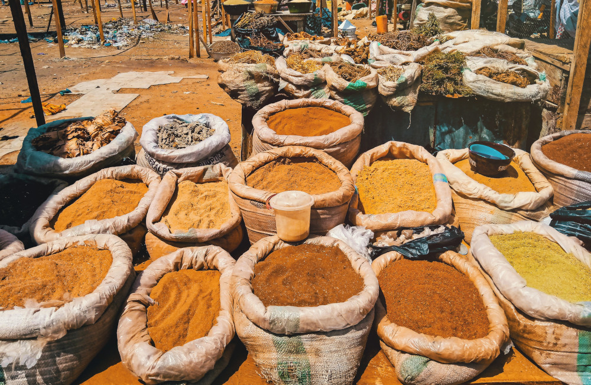

Спеції та мікроби
Сьогодні у часи глобалізації та розвитку транспортних перевезень для того, аби придбати чорний перець чи корицю, не обов'язково бути багатієм, який може собі це дозволити. А маючи фантазію та бажання, можна будь-яку страву перетворити на витвір мистецтва за допомогою спецій. У наш золотий час існують холодильники та контроль якості харчових продуктів, тож заїдати сумнівне м'ясо гвоздикою немає необхідності.
Однак спеції на сьогодні не втрачають актуальності не лише із гастрономічних міркувань.
Ці рослини є популярним предметом для досліджень різних напрямків. Компоненти, що містяться у спеціях, володіють антиоксидантними, протипухлинними, протизапальними, противірусними, протигрибковими та антибактеріальними властивостями.
А зважаючи на дослідницьку кризу у винайденні нових антибіотиків, спеції можуть представляти собою цілком перспективне поле для пошуків нових речовин, що захищатимуть нас завтра від полірезистентних інфекцій.
І справді, автори стверджують, що гвоздика, кориця, чорний кмин, лавровий лист, гірчиця, розмарин володіють антибактеріальними властивостями і у деяких випадках це ймовірно може використовуватися терапевтично.
У деяких дослідженнях показано, що екстракти із спецій діяли на полірезистентні патогенні мікроби, наприклад, екстракт орегано пригнічував ріст полірезистентних стафілококів, псевдомонад та кишкової палички. А олія кориці у формі ліпосом пригнічувала ріст та формування біоплівки метицилін-резистентних стафілококів. Олія коріандру пригнічувала полірезистентний акінетобактер.
Чому це може не працювати вдома на кухні?
Варто зважати, що у дослідженнях застосовуються переважно не самі спеції, а різних способів приготування екстракти. Вони можуть бути отримані за допомогою різних ектрагентів (вода, етанол, метанол, етилацет, тощо), а також мати різні концентрації. Переважно це дослідження in vitro чи іноді на тваринах. Також варто зважати, що спеції можуть проявляти протимікробну активність по відношенню до одних видів мікробів, але бути абсолютно неактивними по відношенню до інших бактерій. Наприклад, у дослідженнях олія кмину пригнічувала ріст кишкової палички і стафілококів, однак не проявляла жодного ефекту по відношенню до псевдомонад та клебсіел.
Тому лікувати інфекції спеціями чи покладатися на їх антибактеріальні властивості, нехтуючи правилами зберігання продуктів чи обираючи неякісну сировину – ідея не найкраща.
Також варто знати, що спеції самі по собі можуть бути фактором передачі інфекційних хвороб та забрудників на зразок важких металів.
Адже часто спеції походять із країн, у яких високий рівень забруднення довкілля. Зокрема здійснюється наголос на ризиках свинцевого забруднення спецій та трав.
Окрім речовин, що є агентами забруднення довкілля, іноді у спеціях можна зустріти і сторонні предмети, як наприклад, залишки грунту чи мишачу шерсть.
Згідно даних моніторингу FDA, в імпортованих спеціях у 2007–2009 рр. у більш як 6% випадків була присутня сальмонела. Спеції, в яких вона траплялася частіше – коріандр, порошок карі, орегано та базилік.
Спеції, що походили із різних країн, мали різний ступінь мікробної забрудненості – із Мексики та Індії спеції містили сальмонелу частіше, а з Канади, Індонезії та Пакистану – рідше.
За даними звіту, близько 70% випадків інфекційних захворювань, пов'язаних із вживанням спецій траплялися коли їх додають до так званої ready to eat їжі. Іншими словами, якщо ми додаємо спеції у страву, що проходить термообробку, то ймовірність стикнутися із інфекційними наслідками значно менша, ніж якщо ми посипаємо салат сумнівним орегано.
Тому не варто лікувати жувати гвоздику, якщо у вас болить зуб, чи займатися іншим способом самолікування. Також варто уважно ставитися до походження спецій і не очікувати що їх запашний аромат "вб'є всю заразу".

Photo by Omotayo Tajudeen on Unsplash